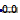
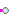
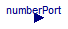
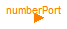
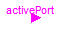
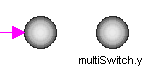

| Name | Description |
|---|---|
|  RealValue | Show Real value from numberPort or from number input field in diagram layer dynamically |
| Show Integer value from numberPort or from number input field in diagram layer dynamically | |
|  BooleanValue | Show Boolean value from numberPort or from number input field in diagram layer dynamically |

This block visualizes a Real number in a diagram animation. The number to be visualized can be defined in the following ways:
The two versions of the block are shown in the following image (in the right variant, the
name of the variable value that is displayed is also shown below the icon):

The usage is demonstrated, e.g., in example Modelica.Blocks.Examples.RealNetwork1.
| Type | Name | Default | Description |
|---|---|---|---|
| Boolean | use_numberPort | true | = true, if numberPort enabled |
| Real | number | 0.0 | Number to visualize if use_numberPort=false (time varying) |
| Integer | significantDigits | 2 | Number of significant digits to be shown |
| Type | Name | Description |
|---|---|---|
| input RealInput | numberPort | Number to be shown in diagram layer if use_numberPort = true |
| output RealOutput | showNumber |
block RealValue
"Show Real value from numberPort or from number input field in diagram layer dynamically"
parameter Boolean use_numberPort = true "= true, if numberPort enabled";
input Real number = 0.0
"Number to visualize if use_numberPort=false (time varying)";
parameter Integer significantDigits(min=1) = 2
"Number of significant digits to be shown";
Modelica.Blocks.Interfaces.RealInput numberPort if use_numberPort
"Number to be shown in diagram layer if use_numberPort = true";
Modelica.Blocks.Interfaces.RealOutput showNumber;
equation
if use_numberPort then
connect(numberPort, showNumber);
else
showNumber = number;
end if;
end RealValue;

This block visualizes an Integer number in a diagram animation. The number to be visualized can be defined in the following ways:
The two versions of the block are shown in the following image (in the right variant, the
name of the variable value that is displayed is also shown below the icon):

The usage is demonstrated, e.g., in example Modelica.Blocks.Examples.IntegerNetwork1.
| Type | Name | Default | Description |
|---|---|---|---|
| Boolean | use_numberPort | true | = true, if numberPort enabled |
| Integer | number | 0 | Number to visualize if use_numberPort=false (time varying) |
| Type | Name | Description |
|---|---|---|
| input IntegerInput | numberPort | Number to be shown in diagram layer if use_numberPort = true |
| output IntegerOutput | showNumber |
block IntegerValue
"Show Integer value from numberPort or from number input field in diagram layer dynamically"
parameter Boolean use_numberPort = true "= true, if numberPort enabled";
input Integer number=0
"Number to visualize if use_numberPort=false (time varying)";
Modelica.Blocks.Interfaces.IntegerInput numberPort if use_numberPort
"Number to be shown in diagram layer if use_numberPort = true";
Modelica.Blocks.Interfaces.IntegerOutput showNumber;
equation
if use_numberPort then
connect(numberPort, showNumber);
else
showNumber = number;
end if;
end IntegerValue;

This block visualizes a Boolean variable in a diagram animation. The Boolean variable to be visualized can be defined in the following ways:
If the Boolean variable is false the block is "grey", otherwise, it is "green".
The two versions of the block are shown in the following image (in the right variant, the
name of the variable value that is displayed is also shown below the icon):

The usage is demonstrated, e.g., in example Modelica.Blocks.Examples.BooleanNetwork1.
| Type | Name | Default | Description |
|---|---|---|---|
| Boolean | use_activePort | true | = true, if activePort enabled |
| Boolean | active | false | Boolean variable to visualize if use_activePort=false (time varying) |
| Type | Name | Description |
|---|---|---|
| input BooleanInput | activePort | Boolean variable to be shown in diagram layer if use_activePort = true |
| output BooleanOutput | showActive |
block BooleanValue
"Show Boolean value from numberPort or from number input field in diagram layer dynamically"
parameter Boolean use_activePort = true "= true, if activePort enabled";
input Boolean active=false
"Boolean variable to visualize if use_activePort=false (time varying)";
Modelica.Blocks.Interfaces.BooleanInput activePort if use_activePort
"Boolean variable to be shown in diagram layer if use_activePort = true";
Modelica.Blocks.Interfaces.BooleanOutput showActive;
equation
if use_activePort then
connect(activePort, showActive);
else
showActive = active;
end if;
end BooleanValue;